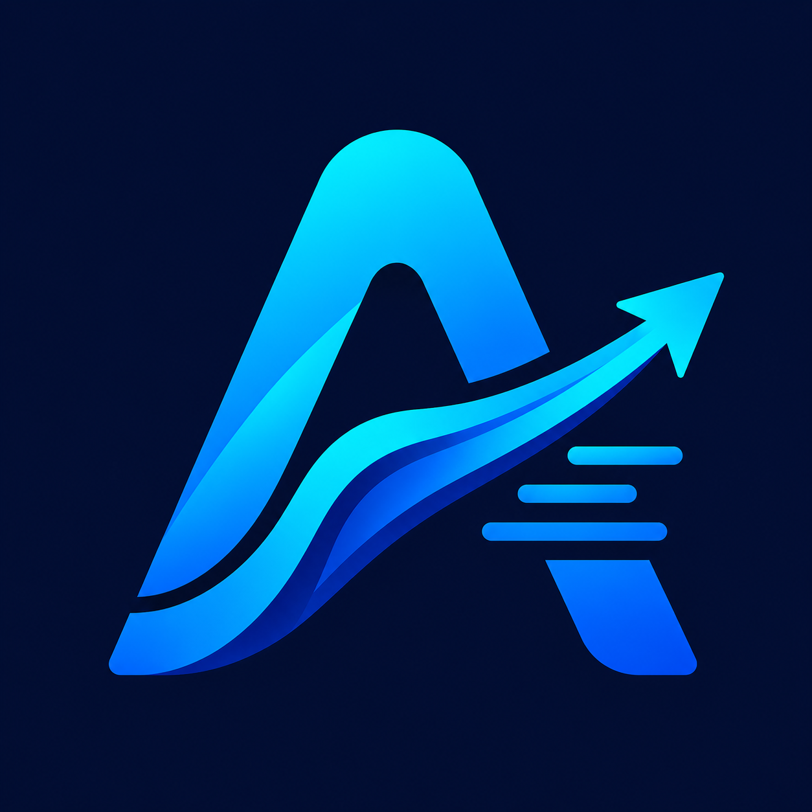

AutoFlow USECASE EXPLAINERFreelancers, startups, and developers are caught between two painful extremes: paying $20–$100/mo per seat for SaaS lock-in, or spending hours writing brittle Docker & Nginx scripts.
Platform markups charge you 5x to 10x the price of real cloud compute for basic container hosting.
Uploading root SSH keys and production `.env` secrets into 3rd-party SaaS pipelines creates unnecessary liability.
Waiting for congested remote build runners when your local machine has a powerful 12-core CPU sitting idle.
AutoFlow is a desktop application (Electron) with an integrated CLI engine that runs entirely on your machine.
| CRITERIA | CLOUD SAAS (VERCEL / HEROKU) | MANUAL DIY SCRIPTS | AUTOFLOW (RECOMMENDED) |
|---|---|---|---|
| Monthly Running Cost | Expensive ($20–$100+/mo per dev) | Cheap ($4 VPS only) | Free Desktop App + $4 VPS |
| SSH Key Security | Stored on Cloud Servers | Shared in plain bash files | 100% Local in OS Keyring |
| Setup Overhead | Fast (5 mins) | Painful (Hours configuring Docker/Nginx/SSL) | Instant (Zero-Config Auto-Detect) |
| Deployment Speed | Queued (2 to 5 mins) | Manual (Slow & Error-prone) | Instant (Direct 12s Rollout) |
| Zero-Downtime Rollover | Yes | No (Downtime during restart) | Yes (Blue/Green Container Switch) |